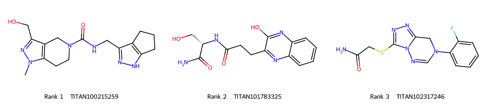

Virtual screening for HSV-1 DNA polymerase inhibitors
Screened small molecules for the Shanghai International Computational Biology Challenge and assembled a chemically diverse shortlist of putative HSV-1 DNA polymerase inhibitors.


Library screening
Standardised compound structures and removed duplicates. Substructure searches, molecular fingerprints and scaffold comparisons identified candidates for scoring with five XGBoost models.
Candidate selection
Compared docking poses across six polymerase structures. Ligand efficiency, solubility and scaffold diversity informed the final selection of 100 compounds from a shortlist of 1,600.